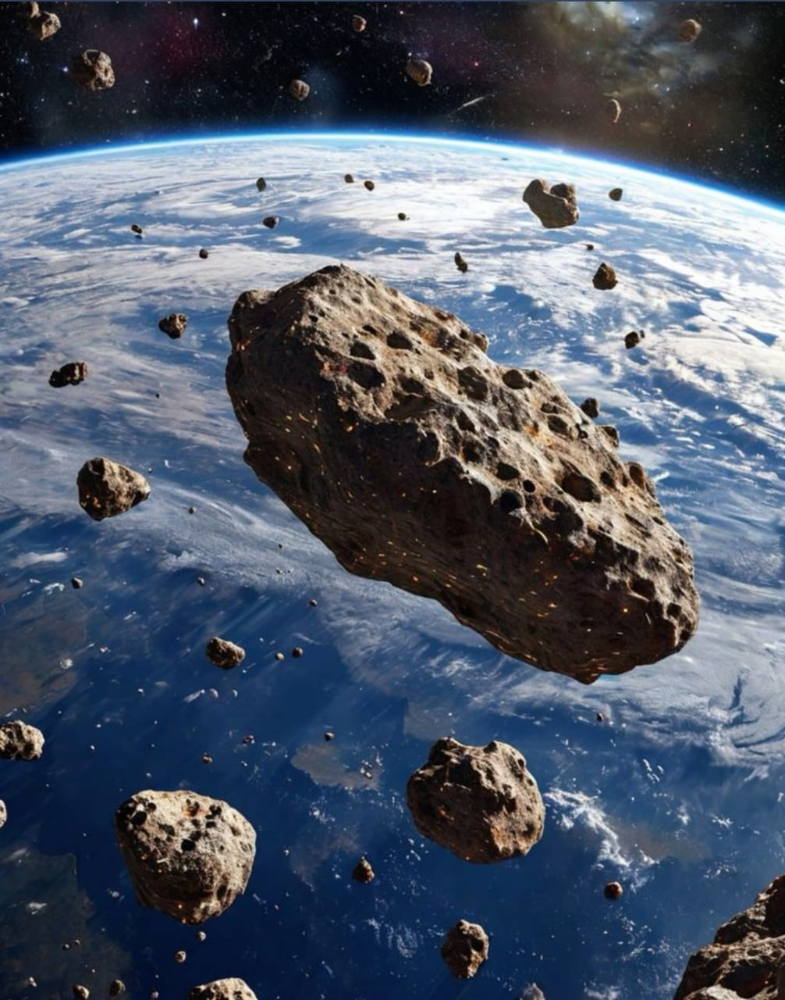

A meteoroid is a small piece of rock, dust or metal travelling through space. They are significantly smaller than asteroids and range in size from small grains to one metre wide objects.
Space dust are smaller than a meteoroid and are thought to be particles of comets and asteroids. Some meteoroids may have broken away from asteroids orbiting the Sun. Others are thought to be fragments thrown into space as a result of impacts on the Moon or other planets.
Shooting stars are what we see when a meteoroid enters Earth’s atmosphere. As it enters the atmosphere, friction causes the meteoroid to heat up and burn brightly, creating a streak of light across the sky. This is referred to as a meteor.
Meteors typically occur in the mesosphere. This altitudes between 76 and 100 km from the Earth’s surface. The word meteor comes from the Greek word meteōros, meaning ‘high in the air’.
When a meteoroid enters the Earth’s atmosphere at speeds of over 20 km per second, friction against the atmosphere causes it to heat up and burn brightly, creating a streak of light. Both the glowing object as well as the trail of glowing particles are referred to as a meteor.
Incoming objects that are large enough to survive passage through the atmosphere as asteroids or comets can explode in the air as a result of pressure. If a piece of the incoming object survives entry and impacts the ground, it is called a meteorite.
Millions of meteors arrive in Earth’s atmosphere daily, but most are too small to be seen from the ground. When Earth passes through streams of debris left by comets, meteor showers occur. These events can produce dozens of meteors per hour, radiating from a specific stream of space debris.